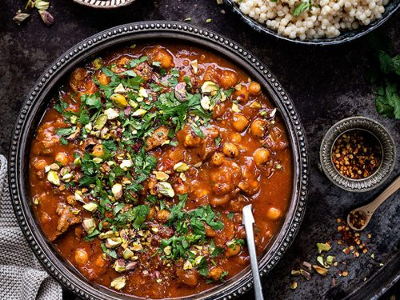
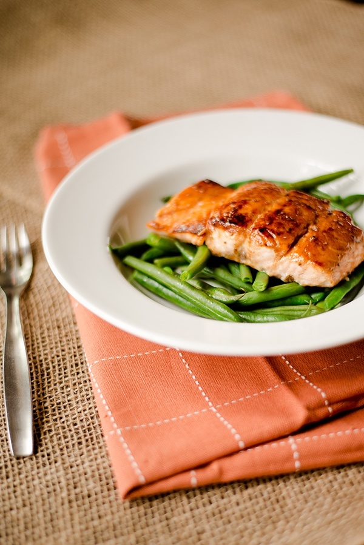

Recipes
Discover new recipes based on your needs and tastes! Check back next week for a new weekly recipe list!
Morrocan Lamb Tagine
Discover a tender, slow cooked lamb tagine! Perfect for all the family to share.
View RecipeRed Lentil Dahl
A perfect red lentil dahl, suitable for freezing during those bust working weeks!
View RecipePan-Roasted Salmon
A beautiful crisp but tender salmon fillet, couple with buttered greens. A perfect match with a light Sauvignon Blanc!
View Recipe